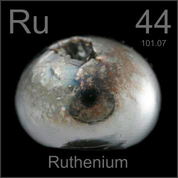

HOME
PREVIOUS
NEXT

Ruthenium
Atomic Weight: 101.07
Density: 12.37 g/cm3
Melting Point: 2334 °C
Boiling Point: 4150 °C
This button of pure solid ruthenium was created by the easiest known method--melting ruthenium powder in an argon-arc furnace. Jewelry is often ruthenium-plated when a dark, pewter-colored shine is desired.